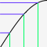

Shapetween is a library for Processing that provides an easy way of animating elements within a sketch in a variety of ways.
The Animation & Shaping library shapetween provides the ability to create basic time based Tween animations, shape them using many of the built in shaping functions and modify them on the fly. In addition to this, the library also opens access to all of the shape functions for other uses, such as data shaping (ie log scaling).
Recommended reading on Computational Tweens (based in Actionscript) from Chapter 7 of Robert Penner's book: Programming Macromedia Flash MX. This library is influenced by his description of code based tween animation.
 In this image, the SIN_OUT function shapes input numbers along a piece of a sin function, condensing the data towards the far end of the spectrum, in an animation, this would ease out.
Easing is essentially the transition between moving and not moving, allowing for a gradual acceleration into and out of motion.